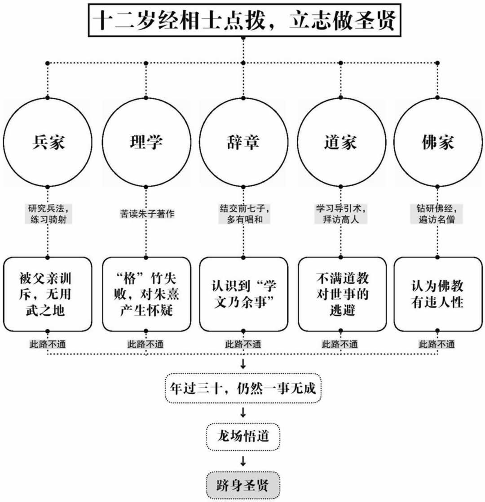

○ 这是载入史册的一瞬 几乎所有的史书都用了相同的词语来描述这一瞬——顿悟 中华文明史上一门伟大的哲学——心学 就此诞生
——题记
在外面混了一年的王守仁终于带着老婆回到了北京。刚一回来，父亲王华就用警惕的眼睛审视着他，唯恐他继续干那些奇怪的事情，但经过一段时间的观察，他发现自己的儿子变了，回家之后除了看书还是看书。
他十分满意，终于放下了心头的大石。
王华犯了一个天真的错误，因为王守仁读的只是朱熹的书，他读书的动机也一如既往——做圣贤。
不久之后，另一件怪事发生了。
王华突然发现，王守仁从书房失踪了，他怕出事，连忙派人去找，结果发现这位怪人正待在自家的花园里，看着一根竹子发呆，一动不动。
参考消息：竹痴
王家的祖先王徽之就是个狂热的竹痴，每天都要看见竹子才安心，到了王守仁的祖父王伦那里就更夸张了：房前屋后，只要有点地方，他就会见缝插针地种上竹子；只要见到有人砍伐竹子，他就心痛不已，并横加阻挠，还振振有词——这是我直谅多闻的朋友，我怎么能忍心让人伤害它呢？由于爱竹成癖，他便有了一个雅号，叫“竹轩先生”。
他走上前去，奇怪地问道：
“你又想干什么？”
王守仁压根儿就没有看他，眼睛依然死盯着那根竹子，只是挥了挥手，轻声说道：
“不要吵，我在参悟圣人之道。”
王华气得不行，急匆匆地走了，一边走一边大叫：
“我不管了，我不管了！”
王守仁依然深情地注视着那根竹子，在他的世界中，只剩下了他和这根不知名的竹子。
王华不理解王守仁的行为，但是大家应该理解，有了前面的哲学课打底，我们已经知道，王守仁先生正大踏步地前进在圣贤之路上，他在“格”自己家的竹子。
“格”竹子实在是一件很艰苦的事情，王守仁坐在竹子跟前，不顾风吹雨淋，不吃不喝，呆呆地看着这个有“理”的玩意儿。
“理”就在其中，但怎么才能知道呢？
怀着成为圣贤的热诚和疑惑，王守仁在竹子面前守了几天几夜，没有得到“理”，却得了感冒。
王守仁病倒了，在病中，他第一次产生了疑问：朱圣人的话是对的吗？
这就是中国哲学史上著名的“守仁格竹”，但这绝不仅仅是一个故事，在故事背后，还有着一个人对未知的执著和探索。
王华受够了自己儿子的怪异行为，他下达了最后通牒，你想研究什么我都不管，但你必须考中进士，此后的事情任你去做。
王华没办法，毕竟他自己是状元，如果儿子连进士都不是，也实在丢不起这个人。
王守仁考虑了一下，认为这个条件还不错，便答应了。从此他重新捡起了四书五经，开始备考。
聪明人就是聪明人，王守仁确实继承了王华的优良遗传基因，他二十一岁第一次参加乡试，就中了举人。老爹终于露出了笑脸，打发了前来祝贺的人们之后，他高兴地拍着儿子的肩膀说道：
“好小子，明年必定金榜题名！”
可是事实证明，平时不烧香、临时抱佛脚毕竟是靠不住的，王守仁先生长年累月干那些杂七杂八的事情，临考前恶补只能糊弄省级考官，到了中央，这一招就不灵了。
之后，弘治六年（1493）和弘治九年（1496），王守仁两次参加会试，都落了榜，铩羽而归。
父亲王华十分着急，王守仁自己也很沮丧，他没有料到，自己想当圣贤，却连会试都考不过，心里十分难过。
换了一般人，此刻的举动估计是在书房堆上一大堆干粮，在房梁上吊一根绳子，再备上一把利器，然后拼命读书备考。
可惜王守仁不是普通人，他经过痛苦的思索，终于有所感悟，并作出了一个决定。
为了得到父亲的支持，他又一次去找父亲谈话。
“我确实错了。”
听到这句话，王华欣慰地笑了：
“以你的天分，将来必成大业，落榜之事无须挂怀，今后用功读书就是了，下次必定中榜。”
发完了感慨的王华高兴地看着自己的好儿子，按照通常逻辑，王守仁应该谢礼，然后去书房读书，可是意外出现了。
王守仁不但没有走，反而向父亲鞠了一躬说道：
“父亲大人误会了，我想了很久，适才明白，落榜之事本来无关紧要，而我却为之辗转反侧，忧心忡忡，为此无关紧要之事烦恼不已，实在是大错。”
王华又一次发蒙了，可是王守仁却毫不理会，继续说道：
“我以为，书房苦读并无用处，学习兵法，熟习韬略才是真正的报国之道，今后我会多读兵书，将来报效国家。”
说完这几句话后，他才不慌不忙地行了一个礼，飘然而去。
面对着王守仁离去的背影，刚刚反应过来的王华发出了最后的怒吼：
“你要气死老子啊！”
王守仁没有开玩笑，在二十六岁这年，他开始学习兵法和谋略，甚至开始练习武艺，学习骑射。
当然了，最终他还是给了自己老爹几分面子，四书五经仍旧照读，也算是对父亲的些许安慰。
就在这日复一日的学习中，王守仁逐渐掌握了军事的奥秘和非凡的武艺，此时武装他头脑的，再不仅仅是四书五经、圣人之言。文武兼备的他已悄悄地超越了很多人，对于他们而言，王守仁已经变得过于强大。
就这么过了两年，王守仁迎来了他人生的第三次会试，这一年他二十八岁。
要说王守仁的智商真不是白给的，他这么瞎糊弄三年，竟然还是中了榜，而且据他父亲调查，他的卷子被评为第一名，可是有人走了后门（招生黑幕），一下把他挤到了二甲。
不过这也无所谓了，王守仁总算是当了官，没给他老爹丢脸，可惜他没有混上翰林，直接被分配去了工部（建设部），但根据工作日志记载，王守仁不算是个积极的官员，他从来都不提什么合理化建议，也不当岗位能手，却认识了李梦阳，整天一起研究文学问题。
这是一种令人羡慕的生活，但在光鲜的外表下，王守仁的痛苦却在不断地加深。
他的痛苦来源于他的追求，因为他逐渐感到，朱圣人所说的那些对他似乎并不起作用，他今天“格”一物，明天又“格”一物，“格”得自己狼狈不堪，却毫无收获。
而一个偶然的事件让他发现，在朱圣人的理论中，存在着某些重大的问题。
这里先提一下朱圣人理论中最为重要的一个观点，说起来真可谓是家喻户晓、鼎鼎大名——“存天理，去人欲”，这句话在实际生活中的运用则更为著名——“饿死事小，失节事大”。
这句话曾经被无数人无数次批倒批臭，我就不凑这个热闹了，但还是有必要解释一下这句话的真实意思，因为很多人可能并不知道，这也是一个深奥的哲学原理。
大家要知道，朱圣人的世界和我们的世界是不同的，这位哲学家的世界是分裂成两块的，一块叫做“理”，另一块叫做“欲”。
朱圣人认为“理”是存在于万物中的，但有一个大敌，那就是“欲”。所谓“理”，是宇宙万物的根本规律和准则，只要人人都遵循了“理”，幸福的生活就来了，那好处多了去了，天下安定了，世界和平了，宇宙也协调了。换在今天，这玩意儿还能降低犯罪率，稳定社会，那些翻墙入室的、飞车抢包的、调戏妇女的张三李四王二麻子，会统统的消失，最终实现和谐社会。
可是，“欲”出来捣乱了，人心不古啊，人类偏偏就是有那么多的欲望，吃饱了不好好待着，就开始思考一些乱七八糟的问题，搞得社会不得安宁。
参考消息：威宁剑
王守仁到工部后的第一件差事，就是督造前兵部尚书王越的坟墓。王越生前战功卓著，这让王守仁很是仰慕，年轻时甚至还梦见王越将自己的佩剑赠送给他。出于对英雄的一片敬意，王守仁十分出色地完成了这一任务。等到他要返回北京复命时，王越的家属前来送行，并带了不少财物作为酬谢，但被王守仁拒绝了。于是家属又取出了一个布囊给他，王守仁打开一看，一柄宝剑赫然映入眼帘，正是王越生前佩带的威宁剑！王守仁激动万分，认定这是冥冥中的天意，就收下了。此后的岁月里，王守仁保国安邦，屡立奇功，王越地下有知，也应感到欣慰了。
所以朱圣人的结论是，要用客观世界的“理”，去对抗主观人心的“欲”，而这才是世界的本原。
通俗地说就是，为了追求理想中的崇高道德，可以牺牲人的所有欲望，包括人性中最基本的欲望。
这是一个对后世产生了极大（或者说极坏）影响的理论。到了明代，这套理论已经成了各级教育机构的通用教材，也是大明王朝各级官僚的行为法则和指导思想，在那个时候，朱圣人的话就是真理，没有多少人敢于质疑这套理论。
可是王守仁开始怀疑了，这源于一件事情的发生。
弘治十四年（1501），王守仁调到了刑部（司法部），当时全国治安不好，犯罪率很高，大案要案频发，他便从此远离了办公室的坐班生活，开始到全国各地出差审案。
但是审案之余，王大人还有一个爱好，那就是四处登山逛庙找和尚、道士聊天，因为他“格”来“格”去，总是“格”不出名堂，只好改读佛经道书，想找点儿灵感。
不久之后，他到了杭州，在这里的一所寺庙中，他见到了一位禅师。
据庙中的人介绍，这位禅师长期参佛，修行高深，而且已经悟透生死，看破红尘，是各方僧人争相请教的对象。
王守仁即刻拜见了禅师，他希望得到更多的启示。
可是他失望了，这位禅师似乎没有什么特别，只是与他谈论一些他早已熟知的佛经禅理，他慢慢地失去了兴趣。而禅师也渐渐无言，双方陷入了沉默。
在这漫长的沉默之中，王守仁突然有了一个念头。
他开口发问，打破了沉寂。
“有家吗？”
禅师睁开了眼睛，答：
“有。”
“家中尚有何人？”
“母亲尚在。”
“你想她吗？”
这个问题并没有得到即刻的回应，空荡荡的庙堂又恢复了寂静，只剩下了窗外凌厉的风声。
良久之后，一声感叹终于响起：
“怎能不想啊！”
然后禅师缓缓地低下了头，在他看来，自己的这个回答并不符合出家人的身份。
王守仁站了起来，看着眼前这个惭愧的人，严肃地说道：
“想念自己的母亲，没有什么好羞愧的，这是人的本性啊！”
听到这句话的禅师并没有回应，却默默地流下了眼泪。
他庄重地向王守仁行礼，告辞而去。第二天，他收拾行装，舍弃禅师的身份，还俗回家去探望自己的母亲。
寺庙的主持怎么也没有想到，这个上门求佛的人竟然把自己的禅师劝回了家，要让他再待上几天，只怕自己这里就要关门了，便连忙把王大人请出了庙门。
王守仁并不生气，因为在这里，他终于领悟了一条人世间的真理：
无论何时，何地，有何种理由，人性都是不能、也不会被泯灭的，它将永远屹立于天地之间。
正是从那一天起，王守仁意识到：朱熹可能是错的。
他开始明白，将天理和人心分开是不对的，人虽然有着种种的欲望，但那是正常的，也是合乎情理的，强行用所谓的天理来压制绝不可能有任何效果。
王守仁并不知道，经过十几年的思考和求索，他已经在无意识中突破了朱圣人的体系，正向着自己那宏伟光辉的目标大踏步地前进。
可要想走到这条圣贤之路的终点，他还必须找到最后，也是最为关键的疑团的答案——“理”。
虽然他不赞成朱熹的“存天理，去人欲”，也不认可人心和天理的分离，但“理”毕竟还是存在的，只有找到这个神秘的“理”，他才能彻底击溃朱熹的体系，成就自己的圣贤之路。
可是“理”在哪里呢？
这又不是猪肉排骨，上对门王屠户那里花几文钱就能买到，奇珍异宝之类的虽然不容易搞到，但毕竟还有个盼头。可这个“理”看不见摸不着，连个奋斗方向都没有，上哪儿找去？
于是唯一的方法只剩下了“格”。王守仁只能相信程颐老师的话了，今天“格”一个，明天“格”一个，相信总有一天能“格”出个结果的。
日子就这么一天天地过去，啥都没有“格”出来，王守仁十分苦恼，他开始意识到可能是方法不对，可他也没有别的法子，只能整日冥思苦想，但无论如何，他依然坚定地相信，只要坚持下去，是能够成功的。
因为他隐约地感觉到，自己已经接近了那个最终疑团的谜底。
成功确实就要到来了，可是老天爷偏偏不做亏本买卖，在将真相透露给王守仁之前，它还要给他一次沉重的打击，考验他的承受能力，以确认他是否有足够的资格来获知这个最大的秘密。
这就是之前提到过的六部九卿上书事件，事实证明，哲学家王守仁先生不是一个只会整日空想漫谈的人，他有着强烈的正义感和勇气。南京的言官戴铣上书被廷杖，大家都上书去救，由于刘瑾过于强势，很多人的奏折上都只谈从宽处理，唯独这位仁兄，不但要救人，还在奏章中颇有新意地给了这位司礼监太监一个响亮的称呼——权奸。
刘瑾气坏了，在当时众多的上书者中，他特别关照了王守仁，不但打了他四十廷杖，还把他贬为贵州龙场驿的驿丞。
这个职位用现在的话说，就是贵州龙场招待所的所长。龙场就在今天的贵州省修文县（贵阳市管辖）境内，在改革开放的二十一世纪，那地方都还算不发达地区，在明代就更不用说了，压根儿就没什么人，那里的招待所别说人，连鬼都不去住。
王守仁原先大小也是个六品主事，结果一下子变成了王所长，那么龙场招待所所长是几品呢？
答案是没品。也就是说大明国的官员等级序列里根本就没这一号人物，基本算是清除出高级公务员队伍了。
于是，天资聪慧、进士出身的王哲学家就此落到了人生的最低谷，可这还没完，还有一场更为严峻的生死考验在等待着他。
刘瑾是一个办事效率很高，做事很绝的人，他罢了王守仁的官，打了他的屁股，却并不肯就此罢休，为了一解心头之恨，他特地找来了杀手，准备在王守仁离开京城赴任途中干掉他。
这一招确实出人意料，一般说来很难防备，可惜刘瑾并不真正了解王守仁。这位兄台虽然平日研究哲学，每天“格”物，看起来傻乎乎的，其实他还有着另外不为人知的一面。
王守仁从小就不是一个安分的人，他应该算是个人精，连他那考上状元的爹都被折腾得无可奈何，初中文化的刘瑾就更不是他的对手了。
他早就料到刘瑾不会放过他，便在经过杭州时玩了一个把戏，把自己的帽子和鞋子丢进了钱塘江，为了达到此地无银三百两的目的，王哲学家做戏也做了全套，还留了封遗书，大意是我因为被人整得很惨，精神压力太大，所以投江自尽了。
这一招很绝，杀手们听说这人已经自尽，就回去交差了，更搞笑的是连杭州的官员们也信以为真，还专门派人在江边给他招魂。
而与此同时，魂魄完好的王守仁已经流窜到了福建，他虽然保住了命，却面临着一个更为麻烦的问题——下一步该怎么办？
不能回京城了，更不想去贵州，想来想去也没出路，看来只能继续流窜当盲流了。
可盲目流动也得有个流动方向才行，往南走，还是往北走？
在武夷山，王守仁找到了问题的答案，因为在这里，他遇到了一位老朋友。他乡遇故知，王守仁高兴之余，便向对方请教自己下一步该怎么办。
他的这位朋友思考了很久，给了他一个天才的建议：
“还是算一卦吧。”（似曾相识）
于是，一百多年前老朱同志参加革命前的那一幕重演了，在王守仁紧张的注视下，算卦的结果出来了：利在南方。
那就去南方吧。
王守仁告别了朋友，踏上了新的征途，但他仍然不愿意去贵州，便选定了另一目的地——南京。
此时他的父亲王华正在南京做官，而且还是高级干部——吏部尚书。但王守仁此去并非是投奔父亲，而且是秘密前往的，因为他已经在中央挂了号，稍有不慎，可能会把父亲也拉下水。他之所以要去南京，只是因为还有一件事情没有了结。
王守仁十分清楚，自己的父亲是一个传统古板的读书人，他并没有什么伟大的梦想，只希望儿子能够追随自己的足迹，好好读书做人，将来混个功名，可现实是残酷的，自己从小胡思乱想就不说了，十几年来他都没消停过，好不容易考中了个进士，现在还被免了官。
事到如今前途已经没有了，要想避祸，看来也只能去深山老林隐居，但在这之前，必须给父亲一个交代。
于是他连夜启程赶往南京，见到了他的父亲。
父亲老了。
经过二十多年的岁月磨砺，当年那个一本正经板着脸训人的中年人已经变成了白发苍苍、满面风霜的老人。
见到儿子的王华十分激动，他先前以为儿子真的死了，悲痛万分，现在见到活人，高兴得老泪纵横，一句话也说不出口，只是不断地抹着眼泪。
王守仁则生平第一次用愧疚的语气向父亲致歉：
“我意气用事，把功名丢了，对不起父亲大人。”
可是他听到的却是这样一个意外的答案：
“不，这件事情你做得很对。”
王守仁诧异地抬起头，看着欣慰颔首的父亲，他这才明白，那个小时候刻板地管束自己，看似不通情理的父亲，是一个善良宽容的人。
经过与“劣子”长达十余年的不懈“斗争”，王华终于了解了儿子的本性和追求，他开始相信，这个“劣子”会成就比自己更为伟大的事业，他的未来不可限量。
父子交谈之后，王华问出了一个关键的问题：
“你今后打算怎么办？”
王守仁叹了口气：
“我在这里只会连累父亲，京城也已回不去，只能找个地方隐居。”
这看来已经是唯一的方法，但王华却摇了摇头。
“你还是去上任吧。”
上任？到哪里上任？去当所长？
“毕竟你还是朝廷的人，既然委任于你，你就有责任在身，还是去吧。”
王守仁同意了，他是一个负责任的人。
就这样，拜别了父亲，王守仁带领着随从，踏上了前往贵州龙场驿站的道路。在那里，他将经受有生以来最沉重的痛苦，并最终获知那个秘密的答案。
王所长向着他的就职地前进了，由于他的父亲是高级干部，所以多少还给了他几个随从下人陪他一起上路，但这些人并不知道他们此行的目的地，只知道是跟王大人的儿子去就任官职。
这么好的差事大家积极性自然很高，一路上欢歌笑语不断，只有王守仁不动声色，因为只有他知道要去哪里，去干什么。
走着走着，随从们发现不对劲儿了，好地方都走过了，越走越偏，越走越远，老兄你到底要去哪里啊？
王守仁还是比较实诚的，他说了实话：
参考消息：王华沉银
“三岁看大，七岁看老。”这句话至少在王华身上是应验的。王华六岁时，有次在河边玩耍。一个醉醺醺的大汉在河边洗了洗脚后便离开了，结果把身上的提囊落下了。王华无意间捡到后，打开一看，里面竟全是白花花的银子！他觉得醉汉酒醒后肯定会来找，又怕被人抢走，于是便把提囊扔到了水中，自己则坐在一旁守候失主。没过多久，就看见大汉哭着回来了。王华问他：“你是在找银子吧？”遂给他指了指沉银之处。大汉下水一摸，银子果然分文不少。出于感激，他取出一锭银子作为酬劳，王华却坚决不要。小小年纪就懂得拾金不昧，这件事很快在当地传为美谈。
“我们要去贵州龙场。”
随从们的脸立马就白了，王大人你太不仗义了，那里平时可是发配犯人的地方啊！
面对着随从们的窃窃私语，王守仁十分坦然：
“如果你们不愿意去，那就回去吧。”
看着犹豫不决的随从，王守仁没有多说什么，只是默默地拾起行李，向前方走去。
夕阳之下，王守仁那孤独的身影越来越远，突然，远处传来了王守仁的大声吟诵：
客行日日万锋头，
山水南来亦胜游。
布谷鸟啼村雨暗，
刺桐花暝石溪幽。
蛮烟喜过青扬瘴，
乡思愁经芳杜洲。
身在夜郎家万里，
五云天北是神州！
“天下之大，虽离家万里，何处不可往！何事不可为！”王守仁大笑着。
在这发聋振聩的笑声中，随从们开始收拾行装，快步上前，赶上了王守仁的脚步。
王守仁的革命浪漫主义情怀是值得钦佩的，可是真正说了算的还是革命现实主义。当他来到自己的就职地时，才真正明白了为什么这个地方叫做龙场——龙才能住的场所。
此地穷山恶水，荆棘丛生，方圆数里还是无人区，龙场、龙场，是不是龙住过的场所不知道，反正不是人待的地方。
不久之后，王守仁就发现了一个更为严重的问题——驿站。
当他来到此地，准备接任驿站职位的时候，只看到了一个老弱不堪的老头，他十分奇怪，便开始问话：
“此地可是龙场？”
“回王大人，这里确是龙场。”
“驿丞在哪里？”
“就是我。”
“那驿卒（工作人员）呢？”
“也是我。”
“其他人呢？”
“没有其他人了，只有我而已。”
王守仁急了：
“怎么会只有你呢？按照朝廷律令规定，这里应该是有驿卒的！”
老头双手一摊：
“王大人，按规定这里应该是有的，可是这里确实没有啊。”
看着眼前这个一脸无辜的老头，王守仁无可奈何地瘫坐在地上。
想到过惨，没想到会这么惨。
要说这世上还是好人多，老头交接完走后没多久，又折转了回来：
“王大人，如果你在这里碰到了汉人，那可千万要小心！”
“为什么？”
“这里地势险恶，要不是流窜犯，或是穷凶极恶之徒，谁肯跑到这里来啊！”
“那本地的苗人呢？”
“喔，这个就不用操心了，他们除了时不时闹点儿事，烧个房子外，其余时间是不会来打扰王大人的，他们的问题基本都是内部解决。”
“为什么？”
“因为他们不懂汉话啊！”
王守仁快晕过去了，他终于明白自己面对的是一个怎样的局面。
老头走了，临走前留下了一句十分“温暖人心”的话：
“王大人多多保重，要是出了什么事，记得找个人来告诉我一声，我会想法给大人家里报信的。”
好了，王所长，这就是你现在的处境，没有下属，没有官服，没有编制，甚至连个办公场所都没有，你没有师爷，也没翻译，这里的人听不懂你说的话，能听懂你说话的人都不是什么好人。
官宦出身、前途光明的王守仁终于落到了他人生的最低谷，所有曾经的富贵与美梦都已经破灭，现在他面对着的是一个人生的关口。
坚持，还是退却？
王守仁卷起了袖子，召集了他的随从们，开始寻找木料和石料，要想长住在这里，必须建一所房子。
然后他亲自深入深山老林，找到了当地的苗人，耐心地用手语一遍又一遍地解释，得到他们的认同，让他们住在自己的周围，开设书院，教他们读书写字，告诉他们世间的道理。
当随从们苦闷不堪、思乡心切的时候，他主动去安慰他们，分担他们的工作。
王守仁用自己的行动作出了选择。
士不可以不弘毅，任重而道远！仁以为己任，不亦重乎！死而后已，不亦远乎！
面对着一切的困难和痛苦，仍然坚定前行、泰然处之的人，才有资格被人们称为圣贤。
王守仁已经具备了这种资格。
但是他还有最后一个问题没有找到答案——“理”。
必须找到，并且领悟这个“理”，才能懂得天地大道的秘密。除此之外，别无他路。
可是“理”到底在哪里呢？十余年不间断地寻找、沉思，不断地“格”，走遍五湖四海，却始终不见它的踪影！
参考消息：王所长的产业
王守仁初到龙场时，连个住处都没有，只得找了个天然溶洞住下，当起了“山顶洞人”。由于他经常在这里研究《易经》，便给溶洞起了个名字叫“玩易窝”。随后他移居龙岗山，山腰有一洞，当地人称为“东洞”。王守仁在此栖身后，将此洞改成“阳明小洞天”，习称“阳明洞”。不过，阳明洞虽然宽敞，却十分潮湿，不太适宜居住。不得已，他便在洞口右下方搭了个小窝棚，取名“何陋轩”。又在洞口左上方建了一个小亭子，周围遍植翠竹，取名作“君子亭”。
为了冲破这最后的难关，他制造了一个特别的石椁，每天除了干活、吃饭之外，就坐在里面，沉思入定，苦苦寻找“理”的下落。
格物穷理！格物穷理！可是事实让他失望了，怎么“格”，这个理就是不出来，在一次又一次的失败中，他逐渐变得急躁、愤怒，脾气越来越差，随从们看见他都要绕路走。
终于，在那个宿命的夜晚，他的不满达到了顶点。
黑暗已经笼罩了寂静的山谷，看着破烂的房舍和荒芜的崇山峻岭，还有年近中年、一事无成、整日空想的自己，一直以来支撑着他的信念终于崩溃了，他已经三十七岁，不再是当年的那个风华少年，他曾经有着辉煌的仕途、光荣的出身、众人的夸耀和羡慕。
现在这一切都已经离他而去。
最让人痛苦和绝望的折磨方法，就是先赐予，然后再一一拿走。
十几年来，唯一支撑着他的只有成为圣贤的愿望。但事实是残酷的，多年的努力看来已付之流水，除了日渐稀少的头发，他什么也没有得到。到底出了什么问题呢？
矢志不渝，追寻圣贤，错了吗？
仗义执言，挺身而出，错了吗？
参考消息：三个外乡人之死
正德四年（1509）的一个秋日，一名从北京来的吏目带着一个儿子、一个仆人，在赴任途中经过龙场，投宿在一户苗族人家中。王守仁本想跟他打听一下北方的情况，无奈阴雨昏黑，只得作罢。第二天早晨，派人去探视，发现人已经走了。后来王守仁接到报告：中午时有人看见一个老人死在蜈蚣坡下，旁边两人哭得很伤心；到傍晚时儿子也死了，仆人则坐在一旁叹息；到了第二天时，坡下已经堆了三具尸体了。想到这三个人很可能要曝尸荒野，王守仁便带了两个童仆，拿着畚箕和铁锹，把三人埋在了山脚下，随即供上一只鸡和三碗饭。看到三人的悲惨遭遇，再联想起自己的处境，主仆三人悲不能已，顿时痛哭起来。
没有错，我相信我所做的一切都没有错。
那上天为何要夺走我的荣华，羞辱我的尊严，使我至此山穷水尽之地步？
既然你决意夺去我的一切，当时为何又给予我所有？
夺走你的一切，只因为我要给你的更多。
给你荣华富贵，锦衣玉食，只为让你知晓世间百态。
使你困窘潦倒，身处绝境，只为让你通明人生冷暖。
只有夺走你所拥有的一切，你才能摆脱人世间之一切浮躁与诱惑，经受千锤百炼，心如止水，透悟天地。
因为我即将给你的并非富甲一方的财富，也不是号令天下的权势，却是这世间最为珍贵神秘的宝物——终极的智慧。
王守仁在痛苦中挣扎着，一切都已失去，“理”却依然不见踪影。
竹子里没有，花园里没有，名山大川里没有，南京没有，北京没有，杭州没有，贵州也没有！
存天理，去人欲！
天理，人欲！
理！欲！
吃喝拉撒都是欲，“欲”在心中，“理”在何处？“理”在何处？！
王守仁陷入了极度的焦虑与狂躁，在这片荒凉的山谷中，在这个死一般宁静的夜晚，外表平静的他，内心正在地狱的烈火中煎熬。
答案就在眼前！只差一步！只差一步而已！
忽然，一声大笑破空而出，打碎了夜间山谷的宁静，声震寰宇，久久不绝。
在痛苦的道路上徘徊了十九年的王守仁，终于在他人生最为痛苦的一瞬获知了秘密的答案。
空山无人，水流花开。
万古长空，一朝风月。
此一瞬已是永恒。

我历经千辛万苦，虚度十九年光阴，寻遍天涯海角，却始终找不到那个神秘的“理”。
现在我终于明白，原来答案一直就在我的身边，如此明了、如此简单，它从未离开过我，只是静静地等待着我，等待着我的醒悟。
“理”在心中。
我竟如此愚钝啊，天地圣贤之道并非存于万物，也无须存于万物，天人本是一体，何时可分？又何必分？
随心而动，随意而行，万法自然，便是圣贤之道！
存天理，去人欲？
天理即是人欲。
王守仁的圣贤之路

这是载入史册的一瞬，几乎所有的史书都用了相同的词语来描述这一瞬——“顿悟”，中华文明史上一门伟大的哲学——心学，就此诞生。
它在这个幽静的夜晚，诞生于僻静而不为人知的山谷，悄无声息，但它的光芒终将照耀整个世界，它的智慧将成为无数人前进的向导。
王守仁成功了，历史最终承认了他，他的名字将超越所有的帝王，与孔子、孟子、朱子并列，永垂不朽。